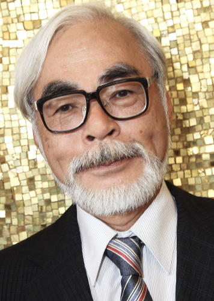
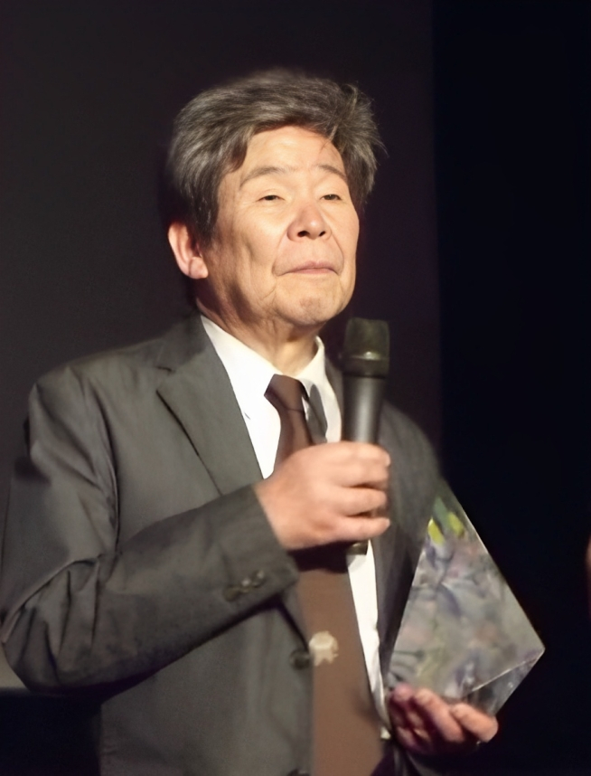
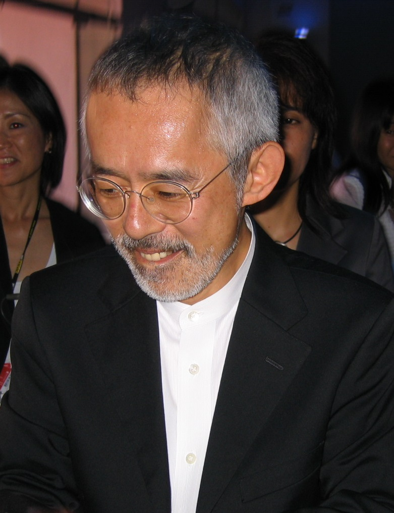
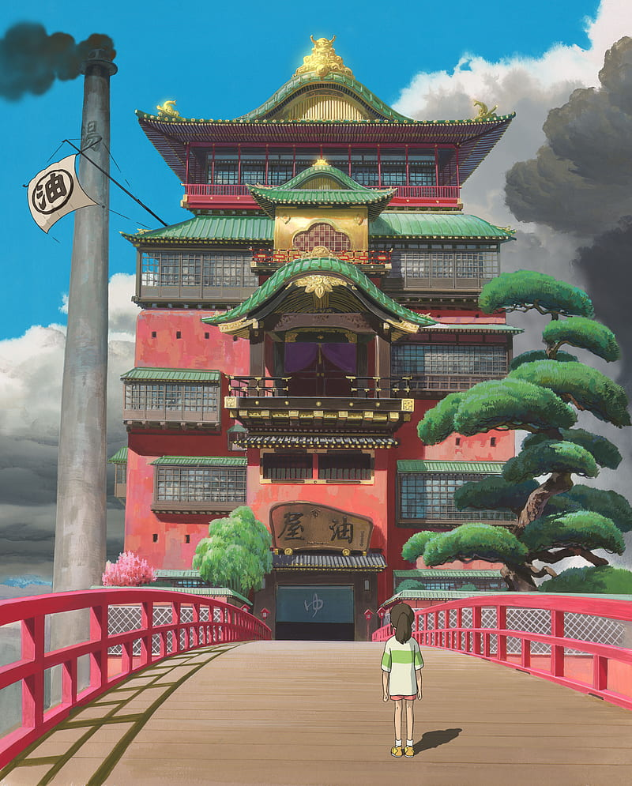
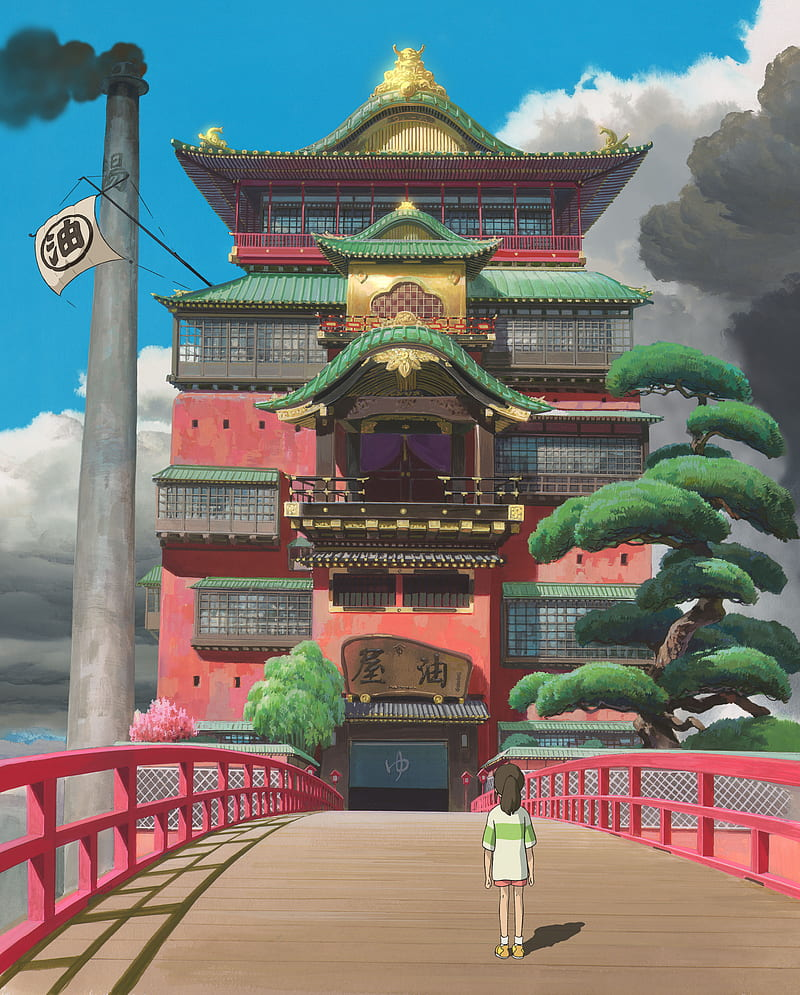

Ist ein japanisches Zeichentrickfilmstudio. Bekannte Anime-Produktionen des Studios sind zum Beispiel Das Schloss im Himmel, Mein Nachbar Totoro, Prinzessin Mononoke, Chihiros Reise ins Zauberland und Das wandelnde Schloss.
Studio Ghibli
- Rechtsform: Kabushiki-gaisha
- Gründung: 15. Juni 1985
- Sitz: Kajino-chō
- Leitung: Kiyofumi Nakajima (CEO & Präsident),Kōji Hoshino
- Website: www.ghibli.jp
Geschichte
  Der Film Nausicaä aus dem Tal der Winde von Hayao Miyazaki war 1984 an den japanischen Kinokassen sehr erfolgreich und führte dazu, dass die Produktionsfirma Tokuma Shoten 1985 das Studio Ghibli gründete. Die Beschäftigten stammten zum Teil aus dem Studio Top Craft, das Nausicaä produziert hatte und zuvor vor allem mit Auftragsproduktionen aus dem Ausland beschäftigt war. So entstand Das letzte Einhorn bei Top Craft, direkt vor Nausicaä.
Merkmale des Studios
Studio Ghibli ist zusammen mit Hayao Miyazaki als Regisseur international sehr bekannt und konzentriert sich fast ausschließlich auf Kinofilme in hoher Qualität. Damit ist es ein Sonderfall unter den japanischen Animationsstudios, die sonst weder über so starke Markenbekanntschaft verfügen, noch sich auf wenige Produktionen in dieser Qualität konzentrieren können oder wollen.
Filmografie
| Name | Jahr | Genre | Dauer |
|---|---|---|---|
| Das Schloss im Himmel | 1986 | Fantasyfilm | 125 Min |
| Mein Nachbar Totoro | 1988 | Fantasyfilm | 87 Min |
| Die letzten Glühwürmchen | 1988 | Animation, Drama, War | 89 Min |
| Kikis kleiner Lieferservice | 1989 | Family, Animation, Fantasy | 103 minutes |
| Tränen der Erinnerung - Only Yesterday | 1991 | Animation, Drama, Romance | 118 Min |
| Name | Jahr | Genre | Dauer |
|---|---|---|---|
| On Your Mark | 1995 | Musikvideo | 7 Minuten |
| Ghiblies: Episode 1 | 2000 | Comedy | 12 Minuten |
| Ghiblies: Episode 2 | 2002 | Comedy | 12 Minuten |
| Mei to Koneko Bus | 2002 | Family, Animation, Adventure | 14 Minuten |
Ghibli-Museum
In der Tokioter Vorstadt Mitaka am Inokashira-Park gibt es ein in Anlehnung an den Stil des österreichischen Künstlers Friedensreich Hundertwasser gestaltetes Ghibli-Museum, in dem unter anderem Originalzeichnungen und -entwürfe besichtigt werden können und eigens für das Museum produzierte Anime-Kurzfilme gezeigt werden. Bei Kindern erfreut sich vor allem das riesige Plüschmodell des „Katzenbus“ aus Mein Nachbar Totoro großer Beliebtheit. Für jeden Tag gibt es nur eine begrenzte Zahl von Eintrittskarten, die ausschließlich über Vorbestellung erhältlich sind. In Japan können sie frühestens einen Monat vorher bei der Kombinikette Lawson erworben werden, im Ausland frühestens drei Monate vorher bei verschiedenen weltweiten offiziellen Verkaufsbüros.
Meist Geschauter Film
 
